3. Anhänge
3.1. Erstellen eines Webprojekts mit Visual Studio.net auf XP für Familien
Mit Visual Studio.net lassen sich verschiedene Arten von Projekten erstellen:
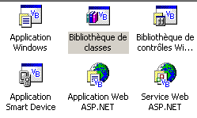
Um ein Webanwendungsprojekt zu erstellen, wählt man normalerweise den Typ [Application Web ASP.NET]. Dieser Projekttyp erfordert einen lokalen oder entfernten Webserver vom Typ IIS. Wenn man auf einem Windows-Rechner XP arbeitet, ist dieser Server nicht vorhanden und kann auch nicht installiert werden. Daher kann kein Projekt vom Typ [Application Web ASP.NET] erstellt werden.
Man kann dieses Hindernis umgehen, indem man einige kleinere Nachteile in Kauf nimmt. Dazu reicht es aus,
- den Cassini-Webserver anstelle des Servers IIS zu verwenden. Er ist kostenlos auf der Microsoft-Website verfügbar.
- ein Projekt vom Typ [Bibliothèque de classes] anstelle des Projekts [Application Web ASP.NET] zu verwenden
Erstellen wir ein einfaches Projekt, das zeigt, wie das funktioniert.
- Erstellen Sie ein Projekt mit dem Namen [Bibliothèque de classes]
 | 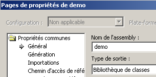 |
- [Class1.vb] löschen

- Ein neues Element vom Typ [Fichier texte] zum Projekt hinzufügen und es [demo.aspx] nennen:
 |  |
- Die Datei [demo.aspx] wird als Webseite erkannt und ihr wird ein Seiteneditor zugeordnet. Dieser verfügt über zwei Bereiche:
- [design] zum grafischen Erstellen der Seite
- [HTML] für den Zugriff auf den Quellcode der Seite HTML

- [Affichage/Code] aufrufen, um den Code-Teil VB der Seite anzuzeigen. Es passiert nichts. Man hat keinen Zugriff auf den Code VB der Seite.
- Gehen Sie in das Bedienfeld [HTML] und geben Sie den Code ein, der die Seite [demo.aspx] mit dem Code [demo.aspx.vb] verknüpft:

- Den zu dieser Seite gehörenden Prüfcode über [Affichage code - F7] abfragen. Man erhält die Datei [demo.aspx.vb]:

- Die Seite [demo.aspx] wird nun als Webseite [.aspx] mit dem zugehörigen Code [.aspx.vb] erkannt.
- Kehren wir zum Bedienfeld [Design] von [demo.aspx] zurück und zeichnen wir die folgende Seite:

Die Seite enthält Text und eine Serverkomponente vom Typ [Label] mit der Kennung [lblHeure].
- Wechseln wir zum Bereich [HTML]. Dort finden wir den folgenden Code:
<%@ Page codebehind="demo.aspx.vb" inherits="demo.demo" autoeventwireup="false" Language="vb" %>
Démo ASPX, il est
<asp:Label id="lblHeure" runat="server"></asp:Label>
Dieser Code ist aus syntaktischer Sicht unvollständig: HTML. Vervollständigen wir ihn:
<%@ Page codebehind="demo.aspx.vb" inherits="demo.demo" autoeventwireup="false" Language="vb" %>
<html>
<head>
<title>démo ASPX</title></head>
<body>
Démo ASPX, il est
<asp:Label id="lblHeure" runat="server"></asp:Label>
</body>
</html>
- Wechseln wir nun in den Code [demo.aspx.vb], um dort den Steuercode einzufügen, der die Uhrzeit in die Komponente [lblHeure] einfügt. Wir stellen fest, dass dieser von Intellisense, dem Tool zur Unterstützung beim Schreiben von Code, nicht erkannt wird.
- Schließen Sie [demo.aspx] und [demo.aspx.vb], nachdem Sie sie zuvor gespeichert haben, und öffnen Sie sie anschließend erneut. Wechseln Sie in den Code [demo.aspx.vb]. Diesmal wird die Komponente [lblHeure] von [demo.aspx] von Intellisense im Code [demo.aspx.vb] korrekt erkannt. Vervollständigen Sie den Code:

- das Projekt mit [Générer/Générer demo] generieren. Wenn die Generierung erfolgreich verläuft, wird die Datei DLL im Ordner [bin] des Projekts generiert:

- Wir sind bereit für die Tests. Wir konfigurieren den Cassini-Server (siehe nächster Absatz) wie folgt:
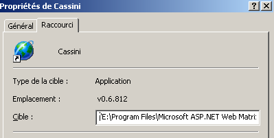
Das Ziel der Verknüpfung zu Cassini wird wie folgt definiert:
"E:\Program Files\Microsoft ASP.NET Web Matrix\v0.6.812\WebServer.exe" /path:"D:\temp\07-04-05\demo" /vpath:"/demo"
der Pfad zur ausführbaren Datei | |
der Pfad zum Visual Studio-Webprojektordner | |
der zugehörige virtuelle Pfad |
- Starten Sie Cassini. Das Symbol wird in der Taskleiste angezeigt. Klicken Sie mit der rechten Maustaste darauf und wählen Sie die Option [Show details], um die korrekte Konfiguration des Webservers zu überprüfen:
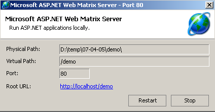
- Rufen Sie mit einem Browser die von uns erstellte Seite auf, indem Sie die URLs URL und [http://localhost/demo/demo.aspx] aufrufen. Wir erhalten folgendes Ergebnis:

Es ist uns gelungen, eine Webanwendung in Visual Studio zu erstellen, und zwar unter Verwendung von:
- ein Projekt vom Typ [bibliothèque de classes]
- dem Cassini-Webserver
Wir wissen nun, wie man Webanwendungen auf Rechnern erstellt, auf denen der Server IIS nicht installiert ist, wie dies bei Windows-Rechnern mit der XP Home Edition der Fall ist.
3.2. Wo findet man den Cassini-Webserver „ “?
Um mit der .NET-Plattform von Microsoft zu arbeiten, kann man den Cassini-Webserver verwenden. Dieser ist über ein Produkt namens [WebMatrix] verfügbar, bei dem es sich um eine kostenlose Webentwicklungsumgebung für die .NET-Plattformen handelt, die unter URL verfügbar ist:

Wir werden die Installationsschritte des Produkts genau befolgen:
- Herunterladen und Installieren der Plattform .NET (Version 1.1 vom März 2004)
- WebMatrix herunterladen und installieren
- MSDE (Microsoft Data Engine) herunterladen und installieren, bei dem es sich um eine eingeschränkte Version von SQL Server handelt.
Nach Abschluss der Installation ist das Produkt [WebMatrix] unter den installierten Programmen verfügbar:

Der Link „[ASP.NET] Web Matrix“ startet die Entwicklungsversion „IDE“ von „ASP.NET“:

Der Link [Class Browser] startet ein Tool zur Erkundung der Klassen .NET:

Um die Installation zu testen, starten wir [WebMatrix]:
 |
Beim ersten Start fragt [WebMatrix] nach den Eigenschaften des neuen projet.C – dies ist die Standardkonfiguration. Man kann das Tool so konfigurieren, dass dieses Dialogfeld beim Start nicht angezeigt wird. Dies erreicht man über die Option [File/New File]. Mit [WebMatrix] lassen sich Skelette für verschiedene Webanwendungen erstellen. Oben haben wir unter (1) angegeben, dass wir eine Anwendung [ASP.ET Page] erstellen möchten, bei der es sich um eine Webseite handelt. Unter (2) geben wir den Ordner an, in dem diese Webseite abgelegt werden soll. In (3) geben wir den Namen der Seite an. Sie muss die Endung .aspx haben. Schließlich legen wir in (4) fest, dass wir mit der Sprache VB.NET arbeiten möchten, wobei [WebMatrix] zudem die Sprachen C# und J# unterstützt. Anschließend zeigt [WebMatrix] eine Bearbeitungsseite für die Datei [demo1.aspx] an. Dort fügen wir den folgenden Code ein:

- Auf der Registerkarte [Design] kann man die Webseite, die man erstellen möchte, „entwerfen“. Dies funktioniert ähnlich wie bei einem IDE zur Erstellung von Windows-Anwendungen.
- Das grafische Design der Webseite in [Design] generiert HTML-Code auf der Registerkarte [HTML]
- Die Webseite kann Steuerelemente enthalten, die Ereignisse auslösen, auf die reagiert werden muss, beispielsweise eine Schaltfläche. Diese Ereignisse werden durch VB.NET-Code verarbeitet, der in der Registerkarte [Code] platziert wird.
- Letztendlich ist die Datei demo1.aspx eine Textdatei, die den Code HTML und den Code VB.NET miteinander verbindet – das Ergebnis des in [Design] erstellten grafischen Entwurfs, des Codes HTML, der manuell in [HTML] hinzugefügt wurde, sowie des Codes VB.NET, der in [Code] platziert wurde. Die gesamte Datei ist auf der Registerkarte [All] verfügbar.
- Ein erfahrener ASP.ET-Entwickler kann die Datei demo1.aspx direkt mit einem Texteditor erstellen, ohne auf IDE zurückgreifen zu müssen.
Wählen wir die Option [All] aus. Wir stellen fest, dass [WebMatrix] bereits Code generiert hat:
<%@ Page Language="VB" %>
<script runat="server">
' Seitencode hier einfügen
'
</script>
<html>
<head>
</head>
<body>
<form runat="server">
<!-- Inhalt hier einfügen -->
</form>
</body>
</html>
Wir werden hier nicht versuchen, diesen Code zu erklären. Wir wandeln ihn wie folgt um:
<html>
<head>
<title>Démo asp.net </title>
</head>
<body>
Il est <% =Date.Now.ToString("hh:mm:ss") %>
</body>
</html>
Der obige Code ist eine Mischung aus HTML und VB.NET. Er wurde in die Tags <% ... %> eingefügt. Um diesen Code auszuführen, verwenden wir die Option [View/Start]. [WebMatrix] startet dann den Cassini-Webserver, falls dieser noch nicht läuft

Man kann die in diesem Dialogfeld vorgeschlagenen Standardwerte übernehmen und die Option [Start] auswählen. Der Webserver ist nun aktiv. [WebMatrix] startet daraufhin den Standardbrowser des Computers, auf dem er sich befindet, und ruft die Seite URL http://localhost:8080/demo1.aspx auf:

Es ist möglich, den Cassini-Server außerhalb von [WebMatrix] zu nutzen. Die ausführbare Datei des Servers befindet sich unter <WebMatrix>\<version>\WebServer.exe, wobei <WebMatrix> das Installationsverzeichnis von [WebMatrix] und <version> dessen Versionsnummer ist:

Öffnen wir ein DOS-Fenster und wechseln wir in den Ordner des Cassini-Servers:
E:\Program Files\Microsoft ASP.NET Web Matrix\v0.6.812>dir
...
29/05/2003 11:00 53 248 WebServer.exe
...
Starten wir [WebServer.exe] ohne Parameter:
Es erscheint ein Hilfefenster:
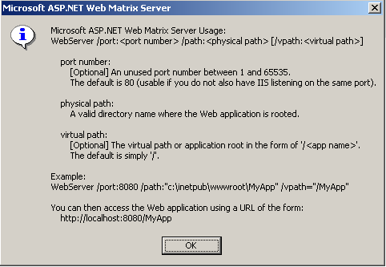
Die Anwendung [WebServer], auch Cassini-Webserver genannt, akzeptiert drei Parameter:
- /port: Portnummer des Webdienstes. Kann beliebig sein. Standardwert ist 80
- /path: Physischer Pfad zu einem Ordner auf der Festplatte
- /vpath: virtueller Ordner, der dem oben genannten physischen Ordner zugeordnet ist. Beachten Sie, dass die Syntax nicht /path=Pfad lautet, sondern /vpath:Pfad – anders als im Beispiel [Example] im obigen Hilfefenster angegeben.
Speichern wir die Datei [demo1.aspx] im folgenden Ordner:

Ordnen wir dem physischen Ordner [d:\data\devel\webmatrix] den virtuellen Ordner [/webmatrix] zu. Der Webserver könnte wie folgt gestartet werden:
E:\Program Files\Microsoft ASP.NET Web Matrix\v0.6.812>webserver /port:100 /path:"d:\data\devel\webmatrix" /vpath:"/webmatrix"
Der Cassini-Server ist nun aktiv und sein Symbol erscheint in der Taskleiste. Wenn man darauf doppelklickt:

werden die Startparameter des Servers angezeigt. Außerdem besteht die Möglichkeit, den Webserver [Stop] zu beenden oder [Restart] neu zu starten. Klickt man auf den Link [Root URL], wird das Stammverzeichnis der Webstruktur des Servers in einem Browser angezeigt:

Folgen wir dem Link [demos]:

und anschließend den Link [demo1.aspx]:

Wir sehen also: Wenn der physische Ordner P=[d:\data\devel\webmatrix] dem virtuellen Ordner V=[/webmatrix] zugeordnet wurde und der Server auf Port 100 läuft, ist die Webseite [demo1.aspx], die sich physisch in [P\demos] befindet, lokal über URL und [http://localhost:100/V/demos/demo1.aspx] erreichbar.
Um den Cassini-Server nicht über ein Fenster mit dem Namen DOS starten zu müssen, kann eine Verknüpfung zur ausführbaren Datei des Servers mit folgenden Eigenschaften erstellt werden:

"C:\Program Files\Microsoft ASP.NET Web Matrix\v0.6.812\WebServer.exe" /port:80 /path:"D:\data\serge\travail\2004-2005\aspnet\webarticles-010405\version3\web" /vpath:"/webarticles" | |
"C:\Program Files\Microsoft ASP.NET Web Matrix\v0.6.812" |
3.3. Wo finde ich Spring?
Die Hauptseite von Spring ist [http://www.springframework.org/]. Dies ist die Seite der Java-Version. Die derzeit in Entwicklung befindliche Version .NET (Stand: April 2005) ist unter der URL [http://www.springframework.net/] zu finden.
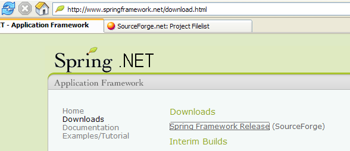
Die Download-Seite befindet sich unter [SourceForge]:

Sobald Sie die oben genannte ZIP-Datei heruntergeladen haben, entpacken Sie sie:

In diesem Dokument haben wir nur den Inhalt des Ordners [bin] verwendet:

In einem Visual Studio-Projekt, das Spring verwendet, müssen zwei Dinge systematisch durchgeführt werden:
- die oben genannten Dateien in den Ordner „[bin]“ des Projekts kopieren
- dem Projekt eine Referenz zur Assembly „[Spring.Core.dll]“ hinzufügen
3.4. Wo findet man Nunit?
Die Hauptwebsite von Nunit ist [http://www.nunit.org/]. Die im April 2005 verfügbare Version ist 2.2.0:

Laden Sie diese Version herunter und installieren Sie sie. Bei der Installation wird ein Ordner erstellt, in dem sich die grafische Testversion befindet:
Das Interessante befindet sich im Ordner [bin]:


Der Pfeil oben zeigt auf das grafische Test-Dienstprogramm. Die Installation hat außerdem neue Elemente zum Assembly-Repository von Visual Studio hinzugefügt, die wir uns nun ansehen werden.
Erstellen wir das folgende Visual Studio-Projekt:

Die getestete Klasse befindet sich in [Personne.vb]:
Public Class Personne
' Private Felder
Private _nom As String
Private _age As Integer
' Standardkonstruktor
Public Sub New()
End Sub
' Eigenschaften der privaten Felder
Public Property nom() As String
Get
Return _nom
End Get
Set(ByVal Value As String)
_nom = Value
End Set
End Property
Public Property age() As Integer
Get
Return _age
End Get
Set(ByVal Value As Integer)
_age = Value
End Set
End Property
' Identitätszeichenfolge
Public Overrides Function tostring() As String
Return String.Format("[{0},{1}]", nom, age)
End Function
' init-Methode
Public Sub init()
Console.WriteLine("init personne {0}", Me.ToString)
End Sub
' close-Methode
Public Sub close()
Console.WriteLine("destroy personne {0}", Me.ToString)
End Sub
End Class
Die Testklasse befindet sich in [NunitTestPersonne-1.vb]:
Imports System
Imports NUnit.Framework
<TestFixture()> _
Public Class NunitTestPersonne
' getestetes Objekt
Private personne1 As Personne
<SetUp()> _
Public Sub init()
' Es wird eine Instanz von „Person“ erstellt
personne1 = New Personne
' Protokoll
Console.WriteLine("setup test")
End Sub
<Test()> _
Public Sub demo()
' Bildschirmprotokoll
Console.WriteLine("début test")
' Person1 initialisieren
With personne1
.nom = "paul"
.age = 10
End With
' Tests
Assert.AreEqual("paul", personne1.nom)
Assert.AreEqual(10, personne1.age)
' Bildschirmprotokoll
Console.WriteLine("fin test")
End Sub
<TearDown()> _
Public Sub destroy()
' Nachverfolgung
Console.WriteLine("teardown test")
End Sub
End Class
Es sind mehrere Dinge zu beachten:
- Die Methoden verfügen über Attribute wie <Setup()>, <TearDown()>, ...
- Damit diese Attribute erkannt werden, muss Folgendes gegeben sein:
- das Projekt auf die Assembly [nunit.framework.dll] verweist
- die Testklasse den Namespace [NUnit.Framework] importiert
Die Referenz wird durch einen Rechtsklick auf [References] im Lösungs-Explorer hergestellt:
 |  |

Die Assembly „[nunit.framework.dll]“ sollte in der angezeigten Liste enthalten sein, wenn die Installation von „[Nunit]“ erfolgreich verlaufen ist. Doppelklicken Sie einfach auf die Assembly, um sie dem Projekt hinzuzufügen:

Anschließend muss die Testklasse [NunitTestPersonne] den Namespace [NUnit.Framework] importieren:
Die Attribute der Testklasse [NunitTestPersonne] müssen dann erkannt werden.
- Das Attribut <Test()> bezeichnet eine zu testende Methode
- Das Attribut <Setup()> bezeichnet die Methode, die vor jeder getesteten Methode ausgeführt werden soll
- Das Attribut <TearDown()> bezeichnet die Methode, die nach jeder getesteten Methode ausgeführt werden soll
- Die Methode Assert.AreEqual ermöglicht es, die Gleichheit zweier entités.Il zu testen. Es gibt zahlreiche weitere Methoden vom Typ Assert.xx.
- Das Dienstprogramm NUnit bricht die Ausführung einer getesteten Methode ab, sobald eine Methode vom Typ [Assert] fehlschlägt, und zeigt eine Fehlermeldung an. Andernfalls wird eine Erfolgsmeldung angezeigt.
Konfigurieren wir unser Projekt so, dass es eine DLL generiert:

Die generierte DLL erhält den Namen [nunit-demos-1.dll] und wird standardmäßig im Ordner [bin] des Projekts abgelegt. Generieren wir unser Projekt. Im Ordner [bin] erhalten wir:

Starten wir nun das grafische Testprogramm Nunit. Zur Erinnerung: Es befindet sich in <Nunit>\bin und heißt [nunit-gui.exe]. <Nunit> bezeichnet den Installationsordner von [Nunit]. Es erscheint folgende Benutzeroberfläche:

Verwenden wir den Menüpunkt [File/Open], um die Dateien DLL und [nunit-demos-1.dll] aus unserem Projekt zu laden:
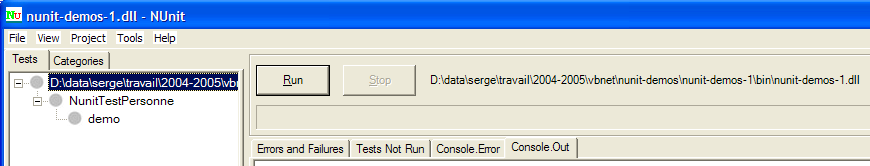
[Nunit] kann die Testklassen, die sich in der geladenen DLL befinden, automatisch erkennen. Hier findet es die Klasse [NunitTestPersonne]. Anschließend zeigt es alle Methoden der Klasse an, die das Attribut <Test()> besitzen. Über die Schaltfläche [Run] können die Tests für das ausgewählte Objekt gestartet werden. Ist dies die Klasse [NunitTestPersonne], werden alle angezeigten Methoden getestet. Man kann den Test einer bestimmten Methode anfordern, indem man diese auswählt und ihre Ausführung über [Run] anfordert. Fordern wir die Ausführung der Klasse an:

Ein erfolgreicher Test einer Methode wird durch einen grünen Punkt neben der Methode im linken Fenster symbolisiert. Ein fehlgeschlagener Test wird durch einen roten Punkt symbolisiert.
Das Fenster [Console.Out] auf der rechten Seite zeigt die von den getesteten Methoden erzeugten Bildschirmausgaben an. Hier wollten wir den Ablauf eines Tests verfolgen:
- Zeile 1 zeigt, dass die Attributmethode <Setup()> vor dem Test ausgeführt wird
- Die Zeilen 2–3 werden von der getesteten Methode [demo] erzeugt (siehe Code weiter oben)
- Zeile 4 zeigt, dass die Attributmethode <TearDown()> nach dem Test ausgeführt wird
3.5. Wo findet man die Firebird- -Datei SGBD?
Die Hauptwebsite von Firebird ist [http://firebird.sourceforge.net/]. Die Download-Seite bietet folgende Links (Stand: April 2005):

Laden Sie folgende Dateien herunter:
SGBD für Windows | |
eine Klassenbibliothek für .NET-Anwendungen, die den Zugriff auf das SGBD ohne Verwendung eines Treibers ODBC ermöglicht. | |
der Firebird-Treiber ODBC |
Führen Sie die Installation dieser Komponenten durch. Der Treiber SGBD wird in einem Ordner installiert, dessen Inhalt in etwa wie folgt aussieht:

Die Binärdateien befinden sich im Ordner [bin]:

ermöglicht das Starten/Beenden von SGBD | |
ein Client-Programm zur Verwaltung von Datenbanken |
Es ist zu beachten, dass der Administrator von SGBD standardmäßig [SYSDBA] heißt und sein Passwort [masterkey] lautet. In [Démarrer] wurden Menüs eingerichtet:

Mit der Option [Firebird Guardian] kann SGBD gestartet bzw. beendet werden. Nach dem Start bleibt das Symbol von SGBD in der Windows-Taskleiste:
 |
Um Firebird-Datenbanken mit dem Befehlszeilen-Client [isql.exe] anzulegen und zu verwalten, müssen Sie die mit dem Produkt im Ordner [doc] gelieferte Dokumentation lesen. Eine schnellere Möglichkeit, mit Firebird zu arbeiten, ist die Verwendung eines grafischen Clients. Ein solcher Client ist IB-Expert, der im folgenden Abschnitt beschrieben wird.
3.6. Wo finde ich IB- Expert?
Die Hauptwebsite von Firebird lautet [http://www.ibexpert.com/]. Auf der Download-Seite finden sich folgende Links:

Man wählt die kostenlose Version [Personal Edition] aus. Sobald diese heruntergeladen und installiert ist, verfügt man über einen Ordner, der in etwa wie folgt aussieht:

Die ausführbare Datei lautet [ibexpert.exe]. Normalerweise ist im Menü eine Verknüpfung zu [Démarrer] vorhanden:

Nach dem Start zeigt IBExpert das folgende Fenster an:

Verwenden wir die Option [Database/Create Database], um eine Datenbank anzulegen:

kann [local] oder [remote] sein. Hier befindet sich unser Server auf demselben Rechner wie [IBExpert]. Wir wählen daher [local] | |
Verwenden Sie die Schaltfläche vom Typ [dossier] aus der Combobox, um die Datenbankdatei auszuwählen. Firebird speichert die gesamte Datenbank in einer einzigen Datei. Das ist einer seiner Vorteile. Die Datenbank lässt sich durch einfaches Kopieren der Datei von einem Rechner auf einen anderen übertragen. Die Endung [.gdb] wird automatisch hinzugefügt. | |
SYSDBA ist der Standardadministrator der aktuellen Firebird-Distributionen | |
„masterkey“ ist das Passwort des Administrators „SYSDBA“ der aktuellen Firebird-Distributionen | |
Der zu verwendende Dialekt SQL | |
Wenn das Kontrollkästchen aktiviert ist, zeigt IBExpert nach der Erstellung der Datenbank einen Link zu dieser an |
Wenn Sie auf die Schaltfläche „Erstellen“ ([OK]) klicken, erhalten Sie die folgende Warnung:

dann haben Sie Firebird nicht gestartet. Starten Sie es. Es erscheint ein neues Fenster:

[IBExpert] kann verschiedene von Interbase abgeleitete SGBD-Dateien verarbeiten. Wählen Sie die von Ihnen installierte Firebird-Version aus |

Sobald dieses neue Fenster von [Register] bestätigt wurde, erhält man folgendes Ergebnis:

Um auf die erstellte Datenbank zuzugreifen, doppelklicken Sie einfach auf den entsprechenden Link. IBExpert zeigt dann eine Baumstruktur an, über die Sie auf die Eigenschaften der Datenbank zugreifen können:

Erstellen wir eine Tabelle. Wir klicken mit der rechten Maustaste auf [Tables] und wählen die Option [New Table]. Daraufhin erscheint das Fenster zur Definition der Tabelleneigenschaften:
 |
Beginnen wir damit, der Tabelle den Namen [ARTICLES] zu geben, indem wir das Eingabefeld [1] verwenden:
 |
Verwenden wir das Eingabefeld [2], um einen Primärschlüssel [ID] zu definieren:
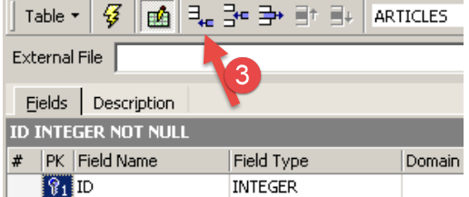 |
Ein Feld wird durch einen Doppelklick auf das Feld „[PK]“ (Primärschlüssel) des Feldes zum Primärschlüssel gemacht. Fügen wir über die Schaltfläche „[3]“ weitere Felder hinzu:

Solange wir unsere Definition nicht „kompiliert“ haben, wird die Tabelle nicht angelegt. Verwenden wir die Schaltfläche „[Compile]“ oben, um die Definition der Tabelle abzuschließen. „IBExpert“ bereitet die Abfragen „SQL“ zur Erstellung der Tabelle vor und fordert eine Bestätigung an:

Interessanterweise zeigt IBExpert die Abfragen SQL an, die es ausgeführt hat. Dies ermöglicht das Erlernen sowohl der Sprache SQL als auch des möglicherweise verwendeten proprietären Dialekts SQL. Mit der Schaltfläche [Commit] kann die laufende Transaktion bestätigt werden, mit [Rollback] kann sie abgebrochen werden. Hier wird sie mit [Commit] akzeptiert. Anschließend fügt IBExpert die erstellte Tabelle zur Baumstruktur unserer Datenbank hinzu:

Durch einen Doppelklick auf die Tabelle gelangt man zu deren Eigenschaften:

Über das Fenster [Constraints] können wir der Tabelle neue Integritätsbeschränkungen hinzufügen. Öffnen wir es:

Hier finden wir die von uns erstellte Primärschlüssel-Einschränkung wieder. Wir können weitere Einschränkungen hinzufügen:
- Fremdschlüssel [Foreign Keys]
- Feldintegritätsbeschränkungen [Checks]
- Eindeutigkeitsbeschränkungen für Felder [Uniques]
Beachten Sie bitte:
- die Felder [ID, PRIX, STOCKACTUEL, STOKMINIMUM] müssen >0 sein
- das Feld [NOM] darf nicht leer und muss eindeutig sein
Öffnen wir das Fenster [Checks] und klicken wir mit der rechten Maustaste in den Bereich zur Definition der Einschränkungen, um eine neue Einschränkung hinzuzufügen:

Definieren wir die gewünschten Einschränkungen:

Beachten Sie oben, dass die Einschränkung [NOM<>''] zwei Apostrophe und keine Anführungszeichen verwendet. Kompilieren wir diese Einschränkungen mit der Schaltfläche [Compile] oben:

Auch hier erweist sich IBExpert als sehr lehrreich, indem es die Abfragen SQL angibt, die es ausgeführt hat. Wechseln wir nun zum Feld [Constraints/Uniques], um anzugeben, dass der Name eindeutig sein muss:

Definieren wir die Einschränkung:

Kompilieren wir sie. Anschließend öffnen wir das Fenster [DDL] der Tabelle [ARTICLES]:

Dieses Fenster liefert den Generierungscode SQL für die Tabelle mit all ihren Einschränkungen. Dieser Code kann in einem Skript gespeichert werden, um ihn später erneut auszuführen:
SET SQL DIALECT 3;
SET NAMES NONE;
CREATE TABLE ARTICLES (
ID INTEGER NOT NULL,
NOM VARCHAR(20) NOT NULL,
PRIX DOUBLE PRECISION NOT NULL,
STOCKACTUEL INTEGER NOT NULL,
STOCKMINIMUM INTEGER NOT NULL
);
ALTER TABLE ARTICLES ADD CONSTRAINT CHK_ID check (ID>0);
ALTER TABLE ARTICLES ADD CONSTRAINT CHK_PRIX check (PRIX>0);
ALTER TABLE ARTICLES ADD CONSTRAINT CHK_STOCKACTUEL check (STOCKACTUEL>0);
ALTER TABLE ARTICLES ADD CONSTRAINT CHK_STOCKMINIMUM check (STOCKMINIMUM>0);
ALTER TABLE ARTICLES ADD CONSTRAINT CHK_NOM check (NOM<>'');
ALTER TABLE ARTICLES ADD CONSTRAINT UNQ_NOM UNIQUE (NOM);
ALTER TABLE ARTICLES ADD CONSTRAINT PK_ARTICLES PRIMARY KEY (ID);
Nun ist es an der Zeit, Daten in die Tabelle [ARTICLES] einzufügen. Dazu verwenden wir das zugehörige Bedienfeld [Data]:

Die Daten werden durch einen Doppelklick auf die Eingabefelder der einzelnen Zeilen der Tabelle eingegeben. Mit der Schaltfläche [+] wird eine neue Zeile hinzugefügt, mit der Schaltfläche [-] eine Zeile gelöscht. Diese Vorgänge erfolgen in einer Transaktion, die über die Schaltfläche [Commit Transaction] bestätigt wird. Ohne diese Bestätigung gehen die Daten verloren.
Mit IBExpert können Abfragen SQL über die Option [Tools/SQL Editor] oder [F12] ausgeführt werden. Man hat dann Zugriff auf einen erweiterten Abfrage-Editor SQL, mit dem man Abfragen ausführen kann. Diese werden gespeichert, sodass man zu einer bereits ausgeführten Abfrage zurückkehren kann. Hier ein Beispiel:

Man führt die Abfrage SQL über die Schaltfläche [Execute] oben aus. Man erhält das folgende Ergebnis:

Wir beenden unsere Demonstrationen an dieser Stelle. Die Kombination aus IBExpert und Firebird eignet sich hervorragend zum Erlernen von Datenbanken.
3.7. -Treiber installieren und verwenden: ODBC für [Firebird]
3.8. Treiber installieren
Über den Link [firebird-odbc-provider] auf der Download-Seite von [Firebird] (Abschnitt 3.5) gelangt man zu einem Treiber ODBC. Sobald dieser installiert ist, erscheint er in der Liste der installierten Treiber ODBC.
3.9. Eine Quelle ODBC erstellen
- Starten Sie das Tool [Démarrer -> Paramètres -> Outil de configuration -> Outils d'administration -> Sources de données ODBC]:

- Es erscheint das folgende Fenster:

- Fügen wir mit [Add] eine neue Systemdatenquelle hinzu (Bedienfeld [System DSN]), die wir mit der Firebird-Datenbank verknüpfen, die wir im vorherigen Abschnitt erstellt haben:

- Zunächst müssen wir den zu verwendenden Treiber ODBC angeben. Oben wählen wir den Treiber für Firebird aus und fahren dann mit [Terminer] fort. Der Treiber-Assistent ODBC für Firebird übernimmt nun die Steuerung:

- Wir füllen die verschiedenen Felder aus:

Der Name DSN der Quelle ODBC – kann beliebig sein | |
Der Name der zu verarbeitenden Firebird-Datei BD – verwenden Sie [Browse], um die entsprechende .gbd-Datei anzugeben | |
Benutzername für die Verbindung zur Datenbank | |
Das zu dieser Kennung gehörende Passwort |
Mit der Schaltfläche [Test connection] können Sie die Gültigkeit der von uns angegebenen Informationen überprüfen. Bevor Sie diese verwenden, starten Sie bitte SGBD [Firebird]:

- Bestätigen Sie den Assistenten ODBC, indem Sie [OK] so oft wie nötig ausführen
3.10. Testen Sie die Quelle ODBC
Es gibt verschiedene Möglichkeiten, die korrekte Funktion einer Quelle ODBC zu überprüfen. Wir verwenden hier Excel:

- Verwenden wir die oben genannte Option [Données -> Données externes -> Créer une requête]. Es erscheint das erste Fenster eines Assistenten zur Definition der Datenquelle. Im Bereich [Bases de données] werden die derzeit auf dem Rechner definierten Quellen ODBC aufgelistet:

- Wählen wir die soeben erstellte Datenquelle ODBC [odbc-firebird-articles] aus und fahren wir mit [OK] zum nächsten Schritt fort:

- Dieses Fenster listet die in der Quelle ODBC verfügbaren Tabellen und Spalten auf. Wir wählen die gesamte Tabelle aus:

- Fahren wir mit dem nächsten Schritt fort mit [Suivant]:

- In diesem Schritt können wir die Daten filtern. Hier filtern wir nichts und fahren mit dem nächsten Schritt fort:

- In diesem Schritt können wir die Daten sortieren. Wir verzichten darauf und fahren mit dem nächsten Schritt fort:

- Im letzten Schritt werden wir gefragt, was wir mit den Daten tun möchten. Hier leiten wir sie an Excel weiter:

- Hier fragt Excel, wo die abgerufenen Daten gespeichert werden sollen. Wir speichern sie im aktiven Arbeitsblatt ab der Zelle A1. Die Daten werden dann in das Excel-Arbeitsblatt übernommen:

Es gibt weitere Möglichkeiten, die Gültigkeit einer Quelle ODBC zu überprüfen. Man kann beispielsweise die kostenlose Suite OpenOffice verwenden, die unter URL [http://www.openoffice.org] verfügbar ist. Hier ein Beispiel mit einem Text OpenOffice:
 |  |
- Ein Symbol auf der linken Seite des Fensters von OpenOffice ermöglicht den Zugriff auf die Datenquellen. Die Benutzeroberfläche ändert sich daraufhin und zeigt einen Bereich zur Verwaltung der Datenquellen an:

- Eine Datenquelle ist vordefiniert: die Quelle „[Bibliography]“. Durch einen Rechtsklick auf den Bereich „Datenquellen“ können wir mit der Option „[Gérer les sources de données]“ eine neue Datenquelle anlegen:
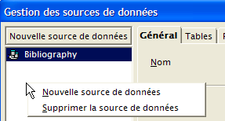
- Mit dem Assistenten [Gestion des sources de données] lassen sich Datenquellen erstellen. Durch einen Rechtsklick auf den Bereich „Datenquellen“ können wir mit der Option [Nouvelle source de données] eine neue Datenquelle erstellen:

beliebiger Name. Hier wurde der Name der Datenquelle ODBC übernommen | |
OpenOffice kann verschiedene Arten von BD über JDBC, ODBC oder direkt (MySQL, Dbase, ...) verarbeiten. Für unser Beispiel muss ODBC ausgewählt werden | |
Über die Schaltfläche rechts neben dem Eingabefeld gelangen wir zur Liste der ODBC-Quellen des Rechners. Wir wählen die Quelle [odbc-firebird-articles] aus |
- Wir wechseln zum Fenster [ODBC], um dort den Benutzer festzulegen, unter dessen Identität die Verbindung hergestellt werden soll:
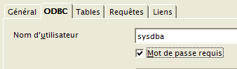
Der Eigentümer der Quelle ODBC |
- Wir wechseln zum Fenster [Tables]. Das Passwort wird abgefragt. Hier lautet es [masterkey]:

- Wir geben [OK] ein. Daraufhin wird die Liste der Tabellen der Quelle ODBC angezeigt:

- Man kann die Tabellen festlegen, die im Dokument [OpenOffice] angezeigt werden sollen. Hier wählen wir die Tabelle [ARTICLES] aus und geben [OK] ein. Die Definition der Datenquelle ist damit abgeschlossen. Sie erscheint nun in der Liste der Datenquellen des aktiven Dokuments:
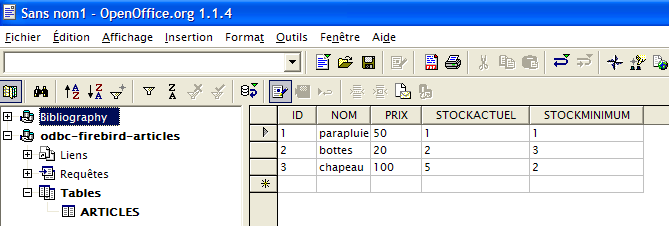
- Man kann die Tabelle [ARTICLES] oben mit der Maus in den Text [OpenOffice] ziehen:

3.11. Verbindungszeichenfolge einer Firebird-Quelle ODBC
- Starten Sie Visual Studio und rufen Sie den Server-Explorer [Affichage/Explorateur de serveurs] auf:
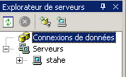 |
- Rechtsklick auf [Connexion de données] und die Option [Ajouter une connexion] auswählen:

- Im Fenster „[Provider]“ angeben, dass die Quelle „ODBC“ (siehe oben) verwendet werden soll, und dann zum Fenster „[Connection]“ wechseln:
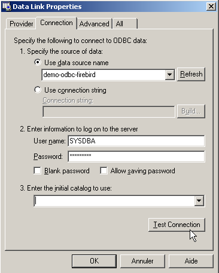
Wählen Sie die Quelle „ODBC“ aus der Auswahlliste aus. Die soeben erstellte Quelle sollte nun angezeigt werden. Verwenden Sie bei Bedarf „[Refresh]“, um die Liste der Quellen „ODBC“ zu aktualisieren. | |
Benutzername für die Anmeldung an der Datenbank | |
das zu dieser Kennung gehörende Passwort |
Auch hier ermöglicht eine Schaltfläche mit der Bezeichnung [Test Connection] die Überprüfung der Gültigkeit der Angaben:
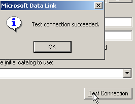
- Bestätigen Sie den Assistenten mit [OK]. Die Datenquelle wird daraufhin im Fenster [Explorateur de serveurs] von Visual Studio angezeigt:

- Durch Doppelklick auf die Tabelle [ARTICLES] erhält man Zugriff auf die Daten der Tabelle:

- Wenn wir mit der rechten Maustaste auf den Link „[Firebird Server D:\temp\... ]“ klicken und die Option „[Propriétés]“ auswählen, erhalten wir Zugriff auf die Verbindungseigenschaften:
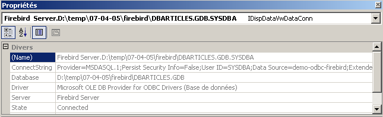
- Die Verbindungszeichenfolge [ConnectString] ist eine interessante Eigenschaft, die man kennen sollte, da der Code .NET sie benötigt, um eine Verbindung zur Datenbank herzustellen. Hier lautet diese Verbindungszeichenfolge:
Provider=MSDASQL.1;Persist Security Info=False;User ID=SYSDBA;Data Source=demo-odbc-firebird;Extended Properties="DSN=demo-odbc-firebird;Driver=Firebird/InterBase(r) driver;Dbname=D:\temp\07-04-05\firebird\DBARTICLES.GDB;CHARSET=NONE;UID=SYSDBA"
Viele Elemente dieser Verbindungszeichenfolge haben Standardwerte. Man kann sich daher mit der folgenden Verbindungszeichenfolge begnügen:
Damit ist unsere Vorstellung des Treibers ODBC von [Firebird] abgeschlossen.
3.12. Wo findet man den SGBD MSDE?
MSDE ist die kostenlose Version des SGBD SQL-Servers von Microsoft. Man findet ihn unter URL [http://www.microsoft.com/sql/msde/downloads/download.asp]:
 |
 |  |
Laden Sie die Installationsdatei herunter und installieren Sie SGBD durch Doppelklick auf die heruntergeladene ausführbare Datei. In einem Fenster werden Sie nach dem Installationsordner gefragt. Der Titel ist irreführend. Es handelt sich um einen temporären Ordner, der anschließend gelöscht werden kann:
 |  |
Lesen Sie die Datei „[ReadmeMSDE2000A.htm]“ aufmerksam durch. Das Installationsprogramm ist das oben genannte „[setup.exe]“. Es wird über die Befehlszeile gestartet, sodass man ihm Parameter übergeben kann. Die wichtigsten sind die folgenden:
Beschreibung | |
| Legt ein verstärktes Passwort fest, das dem Administrator-Login „sa“ zugewiesen werden soll. |
| Legt den Namen der Instanz fest. Wenn INSTANCENAME nicht angegeben wird, installiert das Installationsprogramm eine Standardinstanz. |
Weitere Parameter, die häufig zur Anpassung einer Installation verwendet werden, sind:
Beschreibung | |
| Legt fest, ob die Instanz Netzwerkverbindungen von Anwendungen akzeptiert, die auf anderen Computern ausgeführt werden. Standardmäßig oder wenn Sie DISABLENTWORKPROTOCOL=1 angeben, konfiguriert das Installationsprogramm die Instanz so, dass sie Netzwerkverbindungen ablehnt. Geben Sie DISABLENETWORKPROTOCOLS=0 an, um Netzwerkverbindungen zu aktivieren. |
Gibt an, dass die Instanz im gemischten Modus installiert werden soll, d. h., die Instanz unterstützt sowohl die Windows-Authentifizierung als auch die SQL-Authentifizierung für Verbindungen | |
| Gibt den Ordner an, in dem das Installationsprogramm die Systemdatenbanken, die Fehlerprotokolle und die Installationsskripte installiert. Der für chemin_dossier_données angegebene Wert muss mit einem Backslash (\) enden. Bei einer Standardinstanz fügt das Installationsprogramm dem angegebenen Wert MSSQL\ hinzu. Bei einer benannten Instanz fügt das Installationsprogramm „MSSQL$NomInstance\“ hinzu, wobei „NomInstance“ der über den Parameter „INSTANCENAME“ angegebene Wert ist. Das Installationsprogramm erstellt am angegebenen Speicherort drei Ordner: einen Ordner „Data“, einen Ordner „Log“ und einen Ordner „Script“. |
| Gibt den Ordner an, in dem das Installationsprogramm die ausführbaren Dateien von MSDE 2000 installiert. Der für chemin_dossier_exécutables angegebene Wert muss mit einem Backslash (\) enden. Bei einer Standardinstanz fügt das Installationsprogramm dem angegebenen Wert „MSSQL\Binn“ hinzu. Bei einer benannten Instanz fügt das Installationsprogramm „MSSQL$NomInstance\Binn“ hinzu, wobei „NomInstance“ der über den Parameter „INSTANCENAME“ angegebene Wert ist. |
Nachdem wir die oben genannten Installationsempfehlungen gelesen haben, wechseln wir in den Ordner, in den die Installationsdateien entpackt wurden, und geben den folgenden Befehl DOS ein (Verwendung von SGBD ohne Netzwerk):
- INSTANCENAME="MSDE140405" – dies ist der Name unserer Instanz MSDE. Es können mehrere Instanzen installiert werden.
- SECURITYMODE=SQL – Das Datenbankmanagementsystem läuft im gemischten Authentifizierungsmodus. So kann man sich auf zwei Arten bei MSDE anmelden:
- mit einem Windows-Administratorkonto
- mit einem MSDE-Konto – dabei werden ein Benutzername und ein Passwort abgefragt. Dieser Modus ist in einem Programm zu verwenden, das eine Verbindung zu einer Datenbank der Instanz SGBD herstellt.
- SAPWD="azerty" – dies ist das Passwort des Benutzers „sa“ von SGBD. Der Benutzer [sa] verfügt über Administratorrechte für SGBD.
Für die Nutzung von SGBD im Netzwerk hätte man folgenden Befehl eingegeben:
Das Installationsprogramm ist sehr einfach gehalten und endet ohne Rückmeldung... Man kann jedoch erkennen, dass SGBD über die Option [Menu Démarrer -> Panneau de configuration -> Ajouter et supprimer des programmes] installiert wurde:

Die Installation erfolgt normalerweise unter C:\Program Files\Microsoft SQL Server\MSSQL$nomInstance:
 |  |
Im Ordner „[LOG]“ des Installationsordners befindet sich die Protokolldatei der Installationsphase von „SGBD“. Darin findet sich eine wichtige Information: der Name der Instanz „MSDE“:
Es ist wichtig, diesen Namen zu kennen, da alle Clients von SGBD ihn benötigen. Falls diese Protokolle fehlen, kann man den Namen eines MSDE-Servers ermitteln, der [machine_windows\nom_instance_MSDE] lautet. Der Name des Rechners ist an mehreren Stellen zu finden. Zum Beispiel:
- Klicken Sie mit der rechten Maustaste auf „[poste de travail]“ auf dem Desktop, wählen Sie die Option „[propriétés]“ und anschließend das Fenster „[Nom de l'ordinateur]“:

Es ist weiterhin unklar, wie der Server „MSDE“ gestartet werden kann. Normalerweise wurde eine Verknüpfung in „[Démarrer/Démarrage]“ angelegt.
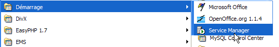
Wenn man sich die Eigenschaften dieser Verknüpfung ansieht, stellt man fest, dass das Ziel wie folgt lautet:
Im Ordner „[ C:\Program Files\Microsoft SQL Server]“ befinden sich folgende Unterordner:

- MSSQL$MSDE140405 ist der Ordner der Instanz MSDE, die wir gerade installiert haben.
- MSSQL ist der Ordner einer früheren Instanz MSDE. Da sie keinen Namen hat, wird sie als Standardinstanz bezeichnet.
- Der Ordner „[80]“ ist ein gemeinsamer Ordner für die verschiedenen installierten Instanzen von „MSDE“. Das Ziel „[sqlmangr.exe]“ der Verknüpfung, die eine Instanz von „MSDE“ startet, befindet sich im Ordner „[ 80\Tools\Binn]“.
Starten wir MSDE über die Verknüpfung von [Démarrer -> Programmes -> Démarrage]. Es passiert so gut wie nichts, außer dass sich ein Symbol in der Statusleiste eingerichtet hat: | Doppelklicken wir auf dieses Symbol: 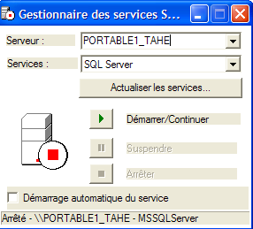 |
Der hier vorgeschlagene Server MSDE ist der auf dem Rechner vorhandene Standard-Server [PORTABLE1_TAHE], der auf dem Rechner vorhanden ist. Zur Erinnerung: der von uns installierte Server MSDE den Namen [PORTABLE1_TAHE\MSDE140405]. Wir ändern den Servernamen im entsprechenden Feld: 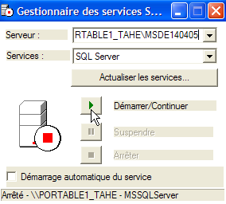 | Wenn alles gut läuft, sollte die Instanz [MSDE140405] gestartet werden:  |
Nun kann eine erste Überprüfung durchgeführt werden. Im selben Ordner, in dem sich [sqlmangr.exe] befindet, befindet sich ein Konsolen-Client [osql.exe], mit dem man eine Verbindung zu einem Server MSDE herstellen und Befehle SQL ausführen kann. Bei der Installation haben wir dem Administrator [sa] unseres Servers MSDE das Passwort [azerty] zugewiesen. Über den Konsolen-Client werden wir uns mit dem neu installierten Server verbinden. Wenn wir den Befehl [osql -?] ausführen, wird die Liste der möglichen Parameter angezeigt:
C:\Program Files\Microsoft SQL Server\80\Tools\Binn>osql -?
utilisation : osql
[-U ID de connexion]
[-P mot de passe]
[-S serveur]
[-H nom de l'hôte]
[-E connexion approuvée]
[-d utiliser le nom de la base de données]
[-l limite du temps de connexion]
[-t limite du temps de requête]
[-h en-têtes]
[-s séparateur de colonnes]
[-w largeur de colonne]
[-a taille du paquet]
[-e entrée d'écho]
[-I Activer les identificateurs marqués]
[-L liste des serveurs]
[-c fin de cmd] [-D nom ODBC DSN]
[-q "requête cmdline"]
[-Q "requête cmdline" et quitter]
[-n supprimer la numérotation]
[-m niveau d'erreur]
[-r msgs vers stderr]
[-V severitylevel]
[-i fichier d'entrée]
[-o fichier de sortie]
[-p imprimer les statistiques] [-b abandon du lot d'instruction après erreur]
[-X[1] désactive les commandes [et quitte avec un avertissement]]
[-O utiliser le comportement Old ISQL désactive les éléments suivants]
<EOF> traitement par lot d'instructions
Mise à l'échelle automatique de la largeur de la console
Messages larges
niveau d'erreur par défaut de -1 au lieu de 1
[-? description de la syntaxe]
Starten wir den Server [MSDE140405] wie oben beschrieben und verwenden wir anschließend in einem DOS-Fenster [osql], um uns unter der Identität [sa, azerty] mit dem Server [portable1_tahe\msde140405] zu verbinden:
C:\Program Files\Microsoft SQL Server\80\Tools\Binn>OSQL.EXE -U sa -S portable1_tahe\msde140405 -P azerty
1>
Die Eingabeaufforderung „[1>]“ zeigt an, dass „[osql]“ auf einen Befehl wartet. Die Verbindung ist hergestellt. Um [osql] korrekt zu verwenden, muss die Dokumentation zu MSDE konsultiert werden. Diese liegt in verschiedenen Formaten vor (PDF, HTML-Hilfe, ...). Die Dokumentation ist sehr umfangreich. Im Allgemeinen wird für die Arbeit mit einer MSDE-Datenbank ein grafischer Client bevorzugt. Dies wird etwas weiter unten vorgestellt. Um [osql] zu beenden, verwendet man den Befehl [exit]:
Wir werden nun sehen, wie man Datenbanken auf dem neu installierten Server MSDE anlegt. Zuvor stellen wir kurz ein Tool namens [MSDE Manager] vor, mit dem sich der Authentifizierungsmodus eines MSDE-Servers ändern lässt. Wenn man einen solchen Server mit den Standardinstallationsoptionen installiert, ist der Authentifizierungsmodus des Servers vom Typ [authentification windows]. Diese Art der Authentifizierung lässt nur Benutzer zu, die auf dem Windows-Rechner identifiziert sind (ggf. über eine Domäne). Für ein Programm VB.NET, das eine Verbindung zu einer Datenbank herstellen möchte, um deren Inhalt zu nutzen, erweist sich dieser Modus als wenig praktisch. Noch problematischer ist es für Java-Anwendungen, die über einen Treiber JDBC auf den SGBD zugreifen. In diesem Fall ist die gemischte Authentifizierung vorzuziehen, die zusätzlich zur vorherigen Authentifizierung auch im SGBD deklarierte Paare (Benutzername, Passwort) akzeptiert. Das Tool [MSDE Manager] ermöglicht diesen Vorgang.
3.13. Wo finde ich den MSDE Manager?
[MSDE Manager] ist ein Verwaltungstool für SGBD und MSDE. Es ist unter URL und [http://www.valesoftware.com/] zu finden.
Die kostenlose Version kann über den obigen Link heruntergeladen werden:


Die Testversion ist nur für kurze Zeit gültig. Das ist in Ordnung, da wir sie nur für einen einzigen, ganz bestimmten Vorgang verwenden werden. Wir laden das Produkt herunter und installieren es. Auf dem Desktop wird eine Verknüpfung angelegt. Über diese starten wir den MSDE Manager. Nachdem wir die ersten Fenster hinter uns haben, gelangen wir zu diesem:

- Starten Sie den Server MSDE140405
- Sie müssen als Administrator auf dem Windows-Rechner angemeldet sein
- Klicken Sie mit der rechten Maustaste auf den Link [SQL Server Group] und wählen Sie die Option [New SQL Server Registration]:


Es erscheint die folgende Eigenschaftenseite:
 |
portable1_tahe\msde140405 – Name der Instanz MSDE, mit der Sie eine Verbindung herstellen möchten | |
Windows-Authentifizierung – dieser Modus ist immer verfügbar und ermöglicht es einem Administrator des Windows-Rechners, sich beim Server MSDE anzumelden | |
Wählen Sie die einzige angezeigte Servergruppe aus: [SQL Server Group] |
Sobald auf [OK] geklickt wurde, wird die Eigenschaftsstruktur des Servers MSDE140405 angezeigt:

Wir könnten nun mit der Erstellung von Datenbanken beginnen. Wir werden dies jedoch nicht tun, da wir ein anderes Produkt verwenden werden, einen Klon des bereits behandelten Produkts IBExpert. Wir werden lediglich den Authentifizierungsmodus von MSDE ändern. Klicken wir mit der rechten Maustaste auf den oben genannten Server MSDE140405 und wählen wir die Option [Design] aus:

Es erscheint das folgende Informationsfenster:
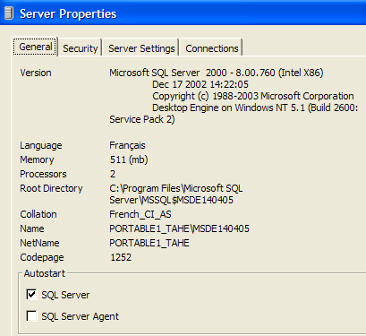
Das Fenster „[General]“ enthält Informationen zum Server „MSDE“, mit dem wir verbunden sind. Die Seite „[Security]“ ist für uns von Interesse:

Hier muss sichergestellt werden, dass der Authentifizierungsmodus von MSDE tatsächlich [SQL Server and Windows] ist. So kann man sich auf zwei Arten bei MSDE anmelden:
- mit einem Windows-Administratorkonto – so wurde es hier gemacht
- mit einem MSDE-Konto – dabei werden ein Benutzername und ein Passwort abgefragt. Dieser Modus ist in einem Programm zu verwenden, das eine Verbindung zu einer Datenbank von SGBD herstellt.
Wir bestätigen diese Auswahl und beenden den MSDE Manager. Wir werden ihn nicht mehr benötigen. Um MSDE-Datenbanken anzulegen, verwenden wir ein anderes Tool: den EMS MS SQL Manager.
3.14. Wo finde ich EMS , MS und SQL Manager?
EMS MS SQL Manager ist ein grafisches Tool zur Arbeit mit dem SGBD Microsoft SQL Server und somit mit MSDE. Es ist dem zuvor beschriebenen IB-Expert-Tool sehr ähnlich. Es ist seit dem URL [http://sqlmanager.net/] (April 2005) verfügbar:

Die Website bietet Verwaltungs-Tools für zahlreiche SGBD. Folgen Sie dem Link [MS SQL Manager]:

Oben wählen wir die Light-Version des Produkts aus. Laden Sie diese herunter und installieren Sie sie. Es entsteht ein Ordner, der in etwa wie folgt aussieht:

Die ausführbare Datei lautet [MsManager.exe]. Normalerweise ist im Menü eine Verknüpfung zu [Démarrer] vorhanden:

Nach dem Start zeigt der MS SQL Manager das folgende Fenster an:

Zunächst registrieren wir den Server MSDE, auf dem wir arbeiten möchten, mit der Option [Database/Register Host]:
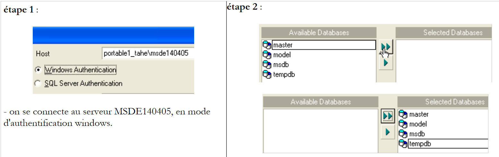 |
Anmerkungen:
- Schritt 1 – Wie bereits erwähnt, unterstützt MSDE zwei Authentifizierungsmodi: Windows und SQL Server. Im Modus [windows] werden die Konten des Windows-Rechners verwendet. Im [SQL Server]-Modus werden die Konten des SGBD verwendet. [SQL Server] kann im Modus [Windows] oder im gemischten Modus [Windows, SQL Server] betrieben werden. Der Authentifizierungsmodus [Windows] ist immer vorhanden. Der gemischte Authentifizierungsmodus ist hingegen nicht immer aktiv. Wir haben gesehen, wie man ihn mit dem MSDE Manager aktivieren kann. Oben erfolgte die Anmeldung mit einem Administratorkonto.
- Schritt 2 – Nach erfolgreicher Authentifizierung werden die Standarddatenbanken von MSDE vorgeschlagen. Oben wurden alle ausgewählt.
 |
Anmerkungen:
- Schritt 3: Es können Verwaltungsoptionen für die ausgewählten Datenbanken ausgewählt werden. Hier wurden die standardmäßig vorgeschlagenen Optionen beibehalten.
- Schritt 4: Wir registrieren den Server MSDE über die Schaltfläche [Register]
Der Server MSDE erscheint nun im Datenbank-Explorer:

Verwenden wir die Option [Database/Create Database], um eine Datenbank anzulegen:
 |
Schritt 2:
Wenn diese Informationsseite erscheint, wurde die Datenbank [dbarticles] erstellt. Dies lässt sich über die Schaltfläche [Test Connect] überprüfen. In das Feld [Database alias] kann man einen beliebigen Namen eingeben. Hier haben wir angegeben:
- den Namen der Datenbank
- den Namen des Servers MSDE, auf dem sie sich befindet
- den Benutzer [admarticles], der Eigentümer dieser Datenbank sein wird, sowie dessen Passwort [mdparticles]. Dieser Benutzer wurde noch nicht angelegt, wird aber in Kürze erstellt.
Schritt 3:
- Mit der Schaltfläche „[Register]“ speichern wir die neue Datenbank unter „[MS SQL Server ]“. Nach dem Speichern erscheint die Datenbank „[admarticles]“ in der Datenbankliste. Ein Doppelklick darauf zeigt die Baumstruktur ihrer Eigenschaften an.
 |  |
Erstellen wir einen neuen Anmelde-Login, der als Administrator der Datenbank [admarticles] fungiert.
- Wählen Sie die Option [Tools/Login manager]:
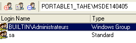
- Es ist festzustellen, dass bereits zwei Anmeldungen definiert sind:
- [BUILTIN\Administrateurs]: Dieser Login nutzt die Windows-Authentifizierung. Er steht für die Administratoren des Windows-Rechners, auf dem sich der Server befindet. MSDE
- sa: Dieses Login verwendet eine SQL-Authentifizierung. Es handelt sich dabei standardmäßig um den Administrator des Servers MSDE. Zur Erinnerung: Aufgrund der Einstellungen bei der Installation von SGBD MSDE lautet das Passwort [azerty].
- Klicken wir mit der rechten Maustaste auf den Bereich „Logins“ und fügen wir einen neuen Login hinzu:
 |
- Es erscheint ein Eingabeformular, in dem wir die Eigenschaften des neuen Logins festlegen:

- Anmeldename: admarticles
- Passwort: mdparticles
- Sobald die Schaltfläche [OK] gedrückt wird, zeigt uns der MS-Manager die Abfragen SQL an, die er ausführen wird:

Die oben dargestellte Sprache SQL ist Transact-SQL, die Sprache SQL von MSDE. Wir fordern die Ausführung dieses Codes durch [OK] an
- Der neue Login wird in die Liste der Logins aufgenommen:

- Im Eigenschaftenfenster der Datenbank [dbarticles] klicken wir mit der rechten Maustaste auf [users], um einen Benutzer mit Rechten für die Datenbank [dbarticles] anzulegen:

- Daraufhin erscheint das folgende Fenster:

- In der Auswahlliste „[Login]“ wird die Liste der vorhandenen Logins angezeigt. Wählen Sie den Login „[admarticles]“ aus.
- In [Name] gibt man einen Benutzernamen ein. Einem Login können mehrere Benutzer zugeordnet werden. Daher muss in MSDE zur Erstellung eines Benutzers zunächst ein Login angelegt werden. Das Fenster [User] sieht nun wie folgt aus:

- Wenden wir uns nun dem Fenster [Member Of] zu, in dem wir die Berechtigungen unseres Benutzers festlegen können:
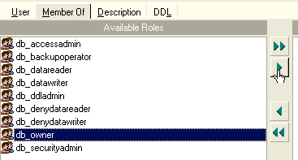
- Ich nutze MSDE nicht regelmäßig und kenne die genaue Bedeutung der einzelnen im linken Fenster angebotenen Rollen nicht. Die Rolle [db_owner] ist verlockend (owner = Eigentümer). Wir wählen sie daher für unseren Benutzer [admarticles] aus:

- Wir bestätigen unsere Auswahl über die Schaltfläche [Compile] oben. Die bei der Ausführung gestellten Abfragen SQL lauten wie folgt:

- Wir kompilieren sie mit [OK]. Wir haben nun einen Benutzer der Datenbank [dbarticles]:

- Erstellen wir nun eine Tabelle. Wir klicken mit der rechten Maustaste auf [Tables] und wählen die Option [New Table]. Es erscheint das Fenster zur Definition der Tabelleneigenschaften:

- Beginnen wir damit, der Tabelle den Namen [ARTICLES] zu geben, indem wir das Eingabefeld [Table Name] verwenden. Wechseln wir anschließend zum Bereich [Fields]:
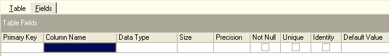
- Definieren wir die folgenden Felder:

Solange wir unsere Definition nicht „kompiliert“ haben, wird die Tabelle nicht angelegt. Verwenden wir die Schaltfläche [Compile] oben, um die Definition der Tabelle abzuschließen. [MS SQL Manager] bereitet die Abfragen SQL zur Erstellung der Tabelle vor und fordert eine Bestätigung an:

Interessanterweise zeigt [MS SQL Manager] die Abfragen SQL an, die es ausgeführt hat. Dies ermöglicht es, gleichzeitig die Sprache Transact-SQL zu erlernen. Mit der Schaltfläche [Commit] kann die laufende Transaktion bestätigt werden, mit [Rollback] kann sie abgebrochen werden. Hier wird sie mit „[Commit]“ bestätigt. Anschließend fügt „[MS SQL Manager]“ die erstellte Tabelle zur Baumstruktur unserer Datenbank hinzu:

Durch einen Doppelklick auf die Tabelle gelangt man zu deren Eigenschaften:

Über das Fenster [Checks] können wir der Tabelle neue Integritätsbeschränkungen hinzufügen. Für die Tabelle [ARTICLES] werden wir die folgenden Beschränkungen erstellen:
- Die Felder [ID, PRIX, STOCKACTUEL, STOKMINIMUM] müssen >=0 sein
- Das Feld [NOM] darf nicht leer sein
Klicken wir im Bereich [Checks] mit der rechten Maustaste auf den leeren Bereich, um eine neue Einschränkung [New check] hinzuzufügen:
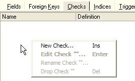
- Das Bearbeitungsfenster für die Einschränkungen sieht wie folgt aus:

Name: Name der Einschränkung
Tabelle: Tabelle, auf die die Einschränkung angewendet wird
Definition: Ausdruck der Einschränkung
Die Einschränkung wird über die Schaltfläche [Compile] oben kompiliert.
- Erneut zeigt [MS SQL Manager] die ausgeführten Befehle von SQL an:
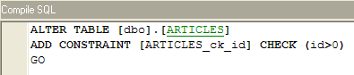
- Diese werden über die Schaltfläche [Commit] (nicht abgebildet) bestätigt. Kehrt man zum Fenster [Checks] der Tabelle [ARTICLES] zurück, erscheint die neue Einschränkung:

- Ebenso definieren wir die anderen Einschränkungen, um schließlich die folgende Liste zu erhalten:

Nachdem dies erledigt ist, öffnen wir das Fenster [DDL] der Tabelle [ARTICLES]:

Dieses Fenster enthält den Transact-SQL-Code zur Erstellung der Tabelle mit allen ihren Einschränkungen. Man kann diesen Code in einem Skript speichern, um ihn später erneut auszuführen:
CREATE TABLE [ARTICLES] (
[id] int NOT NULL,
[nom] varchar(20) COLLATE French_CI_AS NOT NULL,
[prix] float(53) NOT NULL,
[stockactuel] int NOT NULL,
[stockminimum] int NOT NULL,
CONSTRAINT [ARTICLES_uq] UNIQUE ([nom]),
PRIMARY KEY ([id]),
CONSTRAINT [ARTICLES_ck_id] CHECK ([id] > 0),
CONSTRAINT [ARTICLES_ck_nom] CHECK ([nom] <> ''),
CONSTRAINT [ARTICLES_ck_prix] CHECK ([prix] >= 0),
CONSTRAINT [ARTICLES_ck_stockactuel] CHECK ([stockactuel] >= 0),
CONSTRAINT [ARTICLES_ck_stockminimum] CHECK ([stockminimum] >= 0)
)
ON [PRIMARY]
GO
Nun ist es an der Zeit, einige Daten in die Tabelle [ARTICLES] einzufügen. Dazu verwenden wir das zugehörige Bedienfeld [Data]:

Mit der Schaltfläche [+] können Sie eine Zeile hinzufügen, mit der Schaltfläche [-] eine Zeile löschen. Die Daten werden durch einfache Eingabe in die Eingabefelder jeder Zeile der Tabelle eingegeben. Eine Zeile wird über die Schaltfläche [Post Edit] unten bestätigt:

Erstellen wir zwei Artikel:
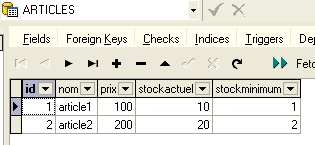
Mit [MS SQL Manager] können Abfragen SQL über die Option [Tools/Show SQL Editor] oder [F12] ausgeführt werden. Man hat dann Zugriff auf einen erweiterten Abfrage-Editor SQL, mit dem man Abfragen ausführen kann. Diese werden gespeichert, sodass man zu einer bereits ausgeführten Abfrage zurückkehren kann. Hier ein Beispiel:

Man führt die Abfrage SQL über die Schaltfläche [Execute] oben aus. Man erhält das folgende Ergebnis:
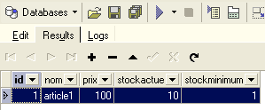
An dieser Stelle beenden wir unsere Demonstrationen. Das Paar [MS SQL Manager - MSDE] erweist sich, ebenso wie das Paar [IBExpert - Firebird], ebenfalls als hervorragend geeignet für das Erlernen von Datenbanken.
3.15. Erstellen einer Quelle ODBC [MSDE]
Der Treiber ODBC für den SQL-Server ist normalerweise standardmäßig auf Windows-Rechnern installiert.
- Starten Sie das Tool [Démarrer -> Paramètres -> Outil de configuration -> Outils d'administration -> Sources de données ODBC]:
- Es erscheint das folgende Fenster:
- Fügen wir mit [Add] eine neue Systemdatenquelle hinzu (Bedienfeld [System DSN]), die wir der Datenbank MSDE zuordnen, die wir im vorherigen Abschnitt erstellt haben:

- Zunächst müssen wir den zu verwendenden Treiber ODBC festlegen. Oben wählen wir den Treiber für [SQL Server] aus und fahren dann mit [Terminer] fort. Der Treiber-Assistent für ODBC von [SQL Server] übernimmt nun die Steuerung:

- Wir füllen die verschiedenen Felder aus:
Der Name der Quelle ODBC – kann beliebig sein | |
kann beliebig sein | |
Name des Servers MSDE, auf dem die Daten der Quelle ODBC gespeichert sind |
- Wir erstellen [Suivant], um neue Informationen bereitzustellen:

- Wir füllen die verschiedenen Felder aus:
Wir geben an, dass wir uns mit der Datenquelle ODBC unter Verwendung eines auf dem Server MSDE registrierten Benutzernamens verbinden werden | |
Benutzername | |
Benutzerkennwort |
- Beachten Sie, dass wir hier zum ersten Mal den in einem vorherigen Abschnitt angelegten Benutzer (admarticles, mdparticles) verwenden. Wir führen erneut den Befehl [Suivant] aus, um das folgende neue Blatt zu erhalten:

- Wir füllen die verschiedenen Felder aus:
Wir wählen die Datenbank [dbarticles] als Standarddatenbank für den Benutzer [admarticles] aus |
- Wir geben [Suivant] ein, um das folgende neue Blatt zu erhalten:

- Wir übernehmen die Standardwerte und erstellen [Terminer]. Es wird eine Zusammenfassung der Merkmale der zu erstellenden Quelle ODBC angezeigt:

- Über die Schaltfläche „[Tester la source de données]“ können wir die Richtigkeit unserer Angaben überprüfen. Vergewissern Sie sich, dass „MSDE“ gestartet wurde, und testen Sie anschließend die Verbindung:

- Wir sind nun sicher, dass das Paar [admarticles, mdparticles] erkannt wird.
Für weitere Tests kann der Leser die in Abschnitt 3.10 beschriebene Vorgehensweise befolgen.
3.16. Verbindungszeichenfolge zu einer Datenbank MSDE
- Starten Sie Visual Studio und rufen Sie den Server-Explorer [Affichage/Explorateur de serveurs] auf:
- Klicken Sie mit der rechten Maustaste auf [Connexion de données] und wählen Sie die Option [Ajouter une connexion]:

- Im Fenster „[Provider]“ angeben, dass eine Quelle „SQL Server“ verwendet werden soll, und dann zum Fenster „[Connection]“ wechseln. Beachten Sie, dass hier kein Treiber „ODBC“ verwendet wird.

Name des Servers MSDE, mit dem eine Verbindung hergestellt wird | |
Benutzername für die Verbindung zur Datenbank | |
das zu dieser Kennung gehörende Passwort | |
die Datenbank, mit der gearbeitet werden soll |
Über die Schaltfläche [Tester la connexion] lässt sich die Gültigkeit der Angaben überprüfen:
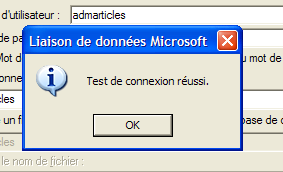
- Bestätigen Sie den Assistenten mit [OK]. Seltsamerweise werden in einem neuen Fenster die Verbindungsdaten abgefragt:

- Man gibt diese erneut ein und führt [OK] aus. Die Datenquelle erscheint dann im Fenster [Explorateur de serveurs] von Visual Studio:

- Durch Doppelklick auf die Tabelle [ARTICLES] erhält man Zugriff auf die Daten der Tabelle:

- Wenn wir mit der rechten Maustaste auf den Link „[portable1_tahe\msde140405.dbarticles.admarticles]“ im Bereich „[Explorateur de serveurs]“ klicken und die Option „[Propriétés]“ auswählen, erhalten wir Zugriff auf die Verbindungseigenschaften:

- Die Verbindungszeichenfolge [ConnectString] ist eine interessante Eigenschaft, die man kennen sollte, da der Code .NET sie benötigt, um eine Verbindung zur Datenbank herzustellen. Hier lautet diese Verbindungszeichenfolge:
Provider=SQLOLEDB.1;Persist Security Info=False;User ID=admarticles;Initial Catalog=dbarticles;Data Source=portable1_tahe\msde140405;Use Procedure for Prepare=1;Auto Translate=True;Packet Size=4096;Workstation ID=PORTABLE1_TAHE;Use Encryption for Data=False;Tag with column collation when possible=False
Viele Elemente dieser Verbindungszeichenfolge haben Standardwerte. Man kann sich daher mit der folgenden Verbindungszeichenfolge begnügen: